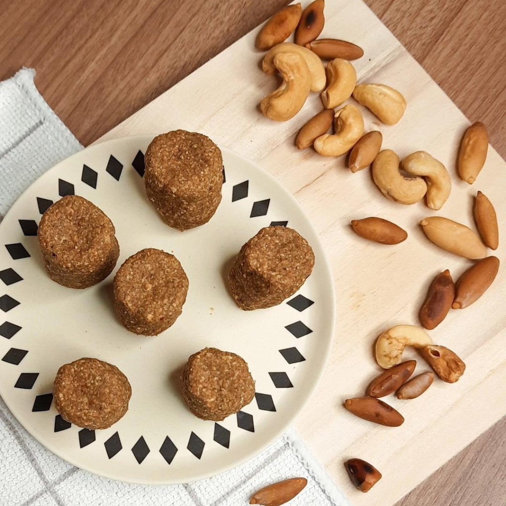

Paçoca de Castanha
Doce típico da Amazônia, feito com castanhas-do-pará moídas, açúcar e um toque de sal. Crocante e saborosa, perfeita como sobremesa ou lanche.

Ingredientes
Rende 12 unidades
- 2 xícaras de castanhas-do-pará torradas
- 1 xícara de açúcar
- 1 pitada de sal
- 2 colheres (sopa) de manteiga ou margarina
Modo de Preparo
Tempo estimado: 30 minutos
- Torre levemente as castanhas em uma frigideira ou forno até ficarem douradas.
- No processador, bata as castanhas junto com o açúcar e a manteiga até formar uma mistura homogênea, mas ainda granulada.
- Acrescente uma pitada de sal e misture bem.
- Molde a massa em pequenas porções, usando forminhas ou moldando à mão.
- Deixe esfriar antes de servir.
Dica do Chef: Para deixar a paçoca ainda mais crocante, use castanhas bem frescas e não bata demais no processador. Sirva com café ou como sobremesa após o almoço.